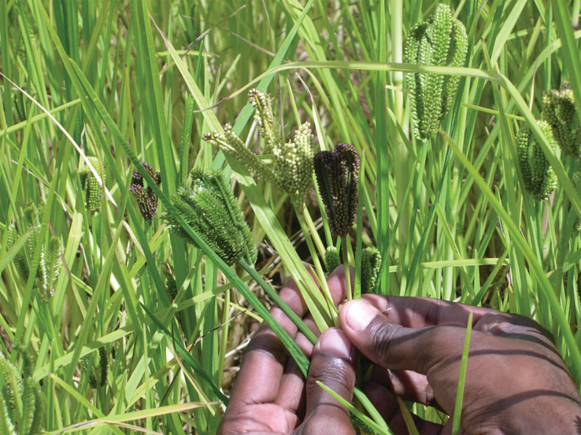

Ragi Harvesting
- Ragi matures 3-5 months after sowing, depending on variety, season and soil properties.
- Harvest the crop when the ears are yellowish brown.
- Heap the harvested ears and cover the heaps with ragi straw for 2-3 days before threshing.
- Dried earheads are beaten with sticks, sheaves are trodden by bullocks or crushed by stone rollers. Separated grains are winnowed and cleaned.
- Straw from irrigated plants is coarse and thick and is rarely cut. It is grazed down or sometimes turned under as manure for next crop
- Grain is higher in protein, fat and minerals than rice, corn, or sorghum.
- It is usually converted into flour and made into cakes, puddings, or porridge.
- The grain is used in the preparation of food items such as ragi dosa, ragi balls, pancake, vermicelli, malt, biscuit, beer, papads, millet mix, bread, roti etc.
1. Stages of Harvesting
|
 |
First harvest
- Cut all earheads which have turned brown.
- Dry, thresh and clean the grains by winnowing.
Second harvest
- Seven days after the first harvest, cut all the earheads including the green ones.
- Cure the grains to obtain maturity by heaping the harvested earheads in shade for one day without drying, so that the humidity and temperature increase and the grains get cured.
- Dry, thresh and clean the grains by winnowing and store the grains in gunnies.
2. Method of harvesting
|
 |
3. Yield
- The average yield of rainfed crop ranges from 1.0 to 1.5 tonnes grain/ha, whereas irrigated crop yields up to 5.0 tonnes/ha.
- Yield depends on variety and is directly related to duration, height and tillering capacity of type grown.
- Types with straight spikes give better yields than those with curved spikes. The fodder yield ranges from 3.0 to 9.0 tonnes/ha in case early group and 9.5-10.0 tonnes/ha in late group.
- The straw of finger millet is a nutritious fodder. It can be conserved by putting up in well-built stakes.